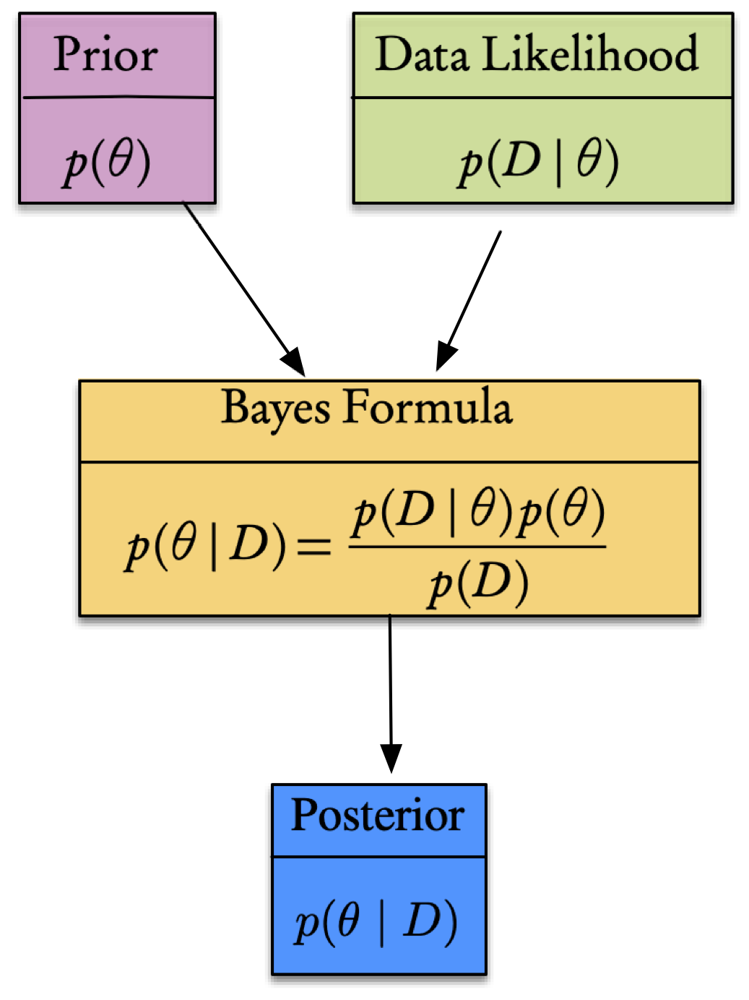

6. Bayesian Inversion#
6.1. Introduction#
Bayesian approaches, provide a foundation for inference from noisy and limited data, a natural mechanism for regularization in the form of prior information, and in very general cases—e.g., non-linear forward operators, non-Gaussian errors—a quantitative assessment of uncertainty in the results. Indeed, the output of Bayesian inference is not a single value for the quantity of interest, but a probability distribution that summarizes all available information about this quantity, be it a vector of parameters or a function (i.e., a signal or spatial field). Exploration of this posterior distribution—and thus estimating means, higher moments, and marginal densities of the inverse solution—may require repeated evaluations of the forward operator. For complex physical models and high-dimensional model spaces, this can be computationally prohibitive.
Bayesian inference provides an attractive setting for the solution of inverse problems. Measurement errors,forward model uncertainties, and complex prior information can all be combined to yield a rigorous and quantitative assessment of uncertainty in the solution of the inverse problem.
6.2. Theory#
A Bayesian Inverse Problem (BIP) is defined as follows:
Given:
observational data and their uncertainties,
a (possibly stochastic) forward model that maps model parameters to observations,
and a prior probability distribution on model parameters that encodes any prior knowledge or assumptions about the parameters.
Find:
the posterior probability distribution of the parameters conditioned on the observational data.
This probability density function (pdf) is defined as the Bayesian solution of the inverse problem. The posterior distribution assigns to any candidate set of parameter fields our belief (expressed as a probability) that a member of this candidate set is the ``true’’ parameter field that gave rise to the observed data.
Of course, all of this is summarized in Bayes’ theorem, expressed as folllows.
What can be said about the value of an unknown or poorly known variable/parameter, \(\theta,\) that represents the parameters of the system, if we have some measured data \(\mathcal{D}\) and a model \(\mathcal{M}\) of the underlying mechanism that generated the data? This is precisely the Bayesian context, where we seek a quantification of the uncertainty in our knowledge of the parameters that according to Bayes’ Theorem takes the form
Here, the physical model that generates the data is represented by the conditional probability (also known as the likelihood) \(p(\mathcal{D}\mid\theta),\) and the prior knowledge of the system by the term \(p(\theta).\) The denominator is considered as a normalizing factor and represents the total probability of \(\mathcal{D}.\) From these we can then calculate the resulting posterior probability, \(p(\theta\mid\mathcal{D}).\) A generalization can include a model, \(\mathcal{M},\) for the parameters. In this case (6.1) can be written as
This is depicted in the flowchart.
{kind=link}